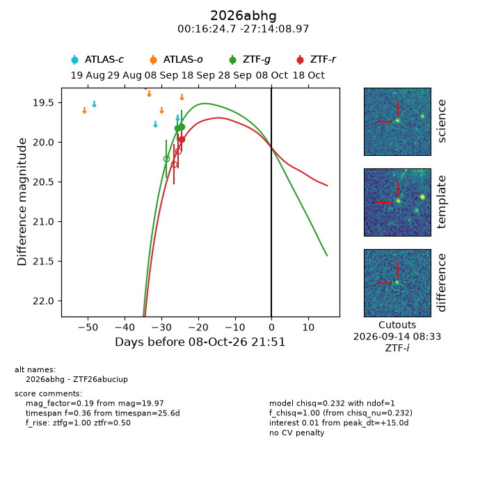
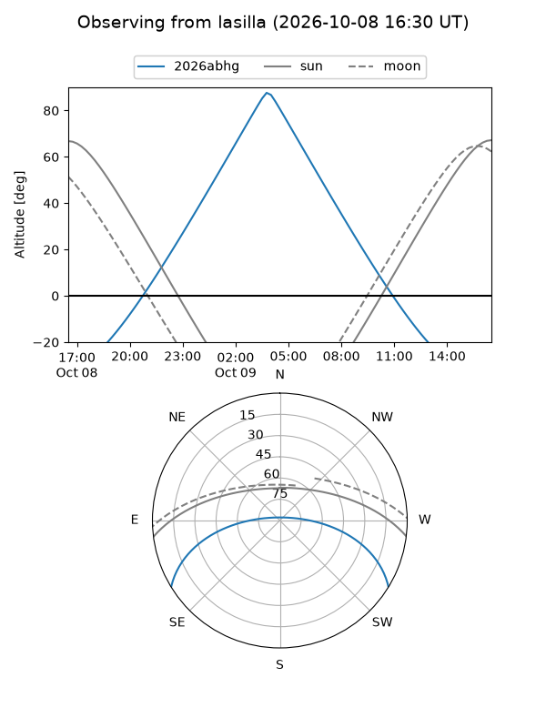
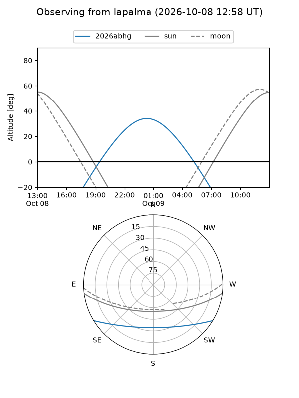
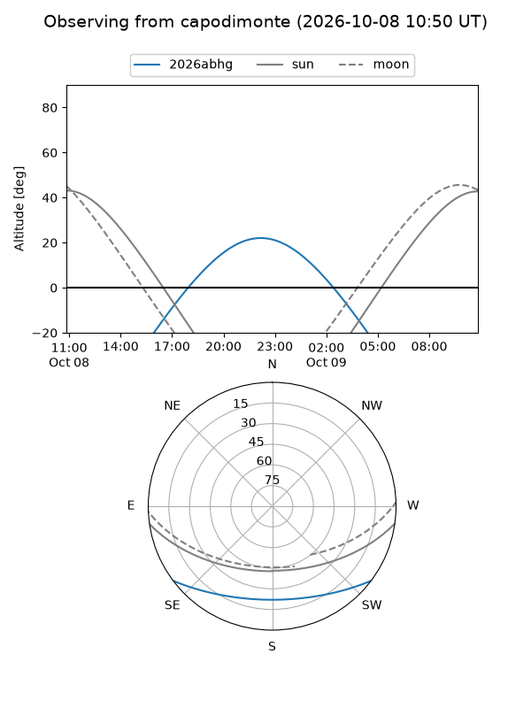
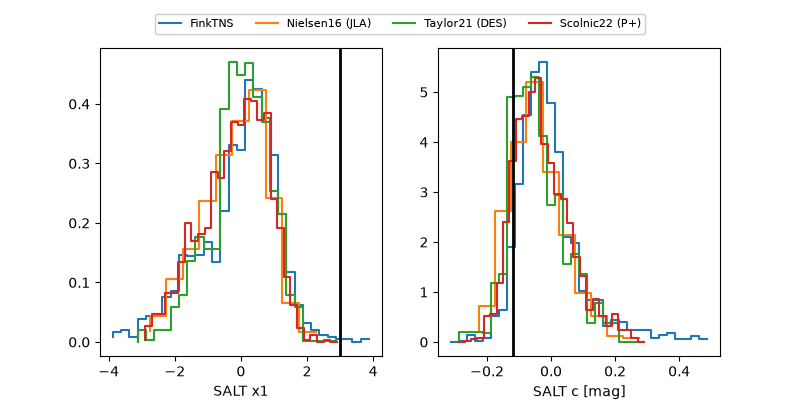

2026abhg
Target 2026abhg at 2026-10-08 21:53
Aliases and brokers:
FINK-ZTF: ztf.fink-portal.org/ZTF26abuciup
Lasair-ZTF: lasair-ztf.lsst.ac.uk/objects/ZTF26abuciup
ALeRCE-ZTF: alerce.online/object/ZTF26abuciup
YSE-PZ: ziggy.ucolick.org/yse/transient_detail/2026abhg
TNS name: wis-tns.org/object/2026abhg
Direct TNS query: direct search
alt names
ZTF26abuciup (ztf,fink_ztf)
2026abhg (tns,yse)
Coordinates:
equatorial (ra, dec) = 4.1030,-27.23582
equatorial (HMS+DMS) = 00:16:24.71,-27:14:08.97
galactic (l, b) = (30.1391,-82.21141)
Flags:
TNS type: nan
peak dt: +15.0
Photometry:
last ztfg=19.80, ztfr=19.97
2 ztfg, 1 ztfr detections
Lightcurve

Visibility



Additional plots
